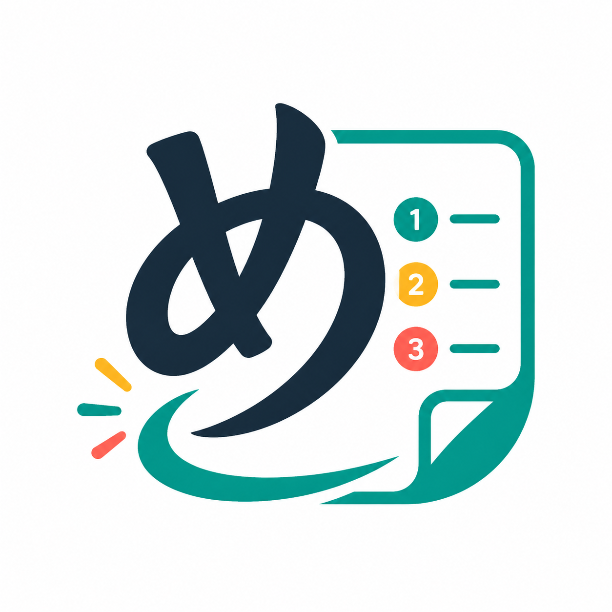

下書きはこの端末に保存されます入力した内容は自動で保存します。保存先を選ぶときは、右上のボタンを押してください。
手順を選ぶと、内容を確認・編集できます。
説明と画像を確認して編集できます。
保存の準備に進む前に、この端末に保存された手順書を確認してください。
自動処理で隠せない情報もあります。画像を確認し、必要な箇所を黒塗りしてください。
ワークスペースに保存しても共有されません。共有する場合は、保存後に共有リンクを作成してください。
保存先を準備しています。